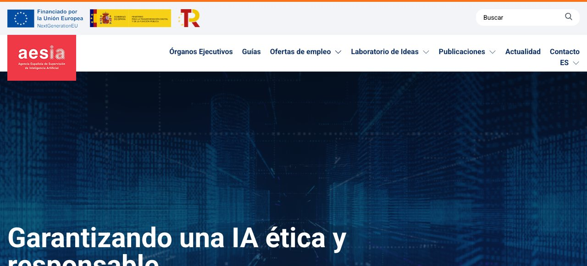

E l mayor ahorro de una pyme con IA suele ser aburrido: correos que salen en diez minutos en vez de en cuarenta, presupuestos que no se escriben desde cero, reuniones que acaban con un resumen. Y el mayor riesgo también es aburrido: alguien pega en una cuenta personal una hoja con datos de clientes, o deja que un bot conteste a un cliente sin avisar de que es un bot. Ninguna de las dos cosas es difícil de evitar si sabes dónde están los límites, y ese es el objetivo de esta guía.
1. Dónde ayuda de verdad (y dónde todavía no)
Antes de hablar de normas, conviene separar lo que la IA hace bien en un negocio pequeño de lo que hace regular. La regla práctica es que rinde donde un error se detecta pronto y cuesta poco, y rinde mal donde el error es silencioso y caro.
- Redactar y reescribir: correos a clientes, respuestas a reseñas, descripciones de producto, anuncios. Es el uso de menor riesgo y el que más tiempo devuelve. Si quieres afinar el resultado, cómo escribir prompts marca la diferencia entre un texto genérico y uno que suena a tu negocio.
- Resumir y ordenar: actas de reuniones, hilos largos de correo, contratos para localizar plazos. Con la salvedad de que el resumen no sustituye a leer lo que importa; hay una guía de IA para gestionar el correo y otra de revisión de contratos.
- Hojas de cálculo: fórmulas, limpieza de datos, categorizar gastos. Funciona muy bien, y la guía de IA en Excel y hojas de cálculo lo detalla.
- Atención al cliente de primer nivel: preguntas frecuentes, horarios, estado de pedidos. Con límites: lo vemos en la sección 6 y en la guía de bot de atención al cliente.
- Redes sociales y marketing: calendarios, ideas, adaptaciones. Útil como borrador, más flojo como voz final; tienes más en IA para redes sociales.
Y esto es lo que todavía no conviene delegar: cifras fiscales y contables sin comprobar, decisiones que afecten a una persona (contratar, despedir, conceder o negar algo), y cualquier texto con valor legal sin revisión profesional. La razón es la misma en los tres casos: los modelos inventan con aplomo, y en un negocio un dato inventado llega a un cliente o a Hacienda. Sobre cómo se produce ese fallo y cómo reducirlo, tienes alucinaciones de la IA.
2. La decisión que lo ordena todo: qué cuenta y qué datos
Casi todos los problemas de una pyme con la IA salen de mezclar dos cosas: la herramienta y el tipo de dato. Una forma útil de ordenarlo es clasificar lo que vas a pegar en tres niveles.
| Nivel | Ejemplos | Dónde puede ir |
|---|---|---|
| Público o genérico | Un texto que ya publicaste, una pregunta general, un borrador sin nombres | Cualquier herramienta, incluida una cuenta gratuita |
| Interno del negocio | Precios, márgenes, un presupuesto con cifras, un plan comercial | Una cuenta de empresa o un plan con garantías de no entrenamiento |
| Datos personales | Nombres, correos, teléfonos, DNI, facturas con datos de clientes, nóminas, datos de salud | Solo con plan comercial y contrato de tratamiento de datos; si no, anonimiza antes |
La segunda columna es la que más se infringe sin querer. Las cuentas gratuitas y las suscripciones individuales son cuentas de consumo, y en ellas el servicio puede usar tus conversaciones para mejorar modelos si no desactivas el ajuste correspondiente. Los planes de empresa funcionan distinto: OpenAI publica que sus productos para empresas (ChatGPT Business, Enterprise y Edu, y la API) no entrenan con tus datos por defecto, y Anthropic dice lo mismo de Claude for Work y su API, actuando como encargado del tratamiento. Es un compromiso de cada proveedor, que puede matizarse por contrato, y conviene leer las condiciones del plan que contrates. Los detalles de cada servicio, con ajustes concretos, están en la guía de privacidad de tus chats con IA.
El truco más barato, y el que más protege, es anonimizar antes de pegar. Sustituye «Marta Gil, calle Mayor 12» por «[Cliente A]», quita el DNI, recorta el IBAN. El asistente rara vez necesita saber a quién le escribes para ayudarte a escribirlo. La Agencia Española de Protección de Datos recomienda precisamente eso en su decálogo de enero de 2026: no incluir datos personales ni confidenciales de la entidad, de su personal o de sus clientes, y describir un caso ficticio cuando haga falta consultar algo real.
3. RGPD en cinco ideas, aplicado a la IA
Si tratas datos personales de clientes, empleados o proveedores —y casi cualquier negocio lo hace—, el Reglamento General de Protección de Datos te alcanza aunque seas autónomo, y usar IA no lo suspende. No hace falta ser jurista para manejar lo esencial. Estas son las cinco ideas que más se aplican, a modo de guía de bolsillo (información general, no asesoramiento jurídico):
- Minimiza. El reglamento pide tratar solo los datos adecuados y limitados a lo necesario. Aplicado a la IA: no subas la base de datos completa si la tarea necesita tres columnas. Menos datos es menos riesgo y menos explicaciones que dar.
- Informa. Cuando recoges datos de alguien, debes informarle de para qué y con qué base. Si empiezas a procesar datos de clientes con un proveedor de IA, revisa que tu política de privacidad lo refleje, en vez de dar por buena la redacción de hace cuatro años.
- Ten contrato con el proveedor (encargado del tratamiento). Si un proveedor trata datos personales por cuenta tuya, el reglamento exige un contrato o acto jurídico que fije qué hace con ellos. Es la razón de que los planes de empresa de los grandes proveedores incluyan un acuerdo de tratamiento de datos y los planes de consumo no. Pídelo y guárdalo.
- Vigila las transferencias fuera del Espacio Económico Europeo. Muchos proveedores de IA son estadounidenses. Mira dónde se procesan los datos, qué mecanismo de transferencia usan y si el plan ofrece residencia de datos en la UE. No supongas que está resuelto.
- No dejes decisiones importantes en manos de la máquina. El reglamento reconoce el derecho a no ser objeto de decisiones basadas únicamente en tratamiento automatizado que tengan efectos jurídicos o te afecten de forma significativa. Si usas IA para filtrar candidatos o puntuar clientes, mantén una persona que decida y pueda explicarlo.
A esto se suma un deber de reacción: si hay una brecha de seguridad con datos personales, el reglamento obliga a notificarla a la autoridad de control en un plazo máximo de 72 horas desde que la conoces, salvo que sea improbable que suponga un riesgo. Un empleado que pega una hoja de clientes en una cuenta personal y descubre después que no debía es el escenario típico; contar con un protocolo escrito de qué se hace y a quién se avisa te ahorra horas en el peor momento. La AEPD tiene además una guía para adaptar al RGPD los tratamientos que incorporan inteligencia artificial, útil si tu negocio va más allá del uso puntual de un asistente.
4. Facturas: qué cambia con la factura electrónica y Verifactu
Aquí hay mucha confusión, porque dos normas distintas se pisan en el calendario y en octubre de 2026 una de ellas está a punto de cambiar de fechas. Vamos por partes, y con una advertencia: lo que sigue es un resumen informativo a 17 de octubre de 2026; en materia fiscal, confirma las fechas con tu gestoría o en la sede de la Agencia Tributaria antes de actuar.
La factura electrónica entre empresas y profesionales. El 5 de octubre de 2026 se publicó en el BOE la Orden HAC/1028/2026, que regula la solución pública de facturación electrónica, y entró en vigor el día siguiente. Según la propia Agencia Tributaria, los plazos cuentan desde el 6 de octubre de 2026: 12 meses (hasta el 6 de octubre de 2027) para las empresas y profesionales con volumen de operaciones superior a 8 millones de euros, y 24 meses (hasta el 6 de octubre de 2028) para el resto, en cuanto a emitir, enviar y recibir facturas electrónicas. Las personas jurídicas con menos de ese volumen tienen además que informar del estado de las facturas y de sus pagos, y las personas físicas y entidades en atribución de rentas lo hacen a los 36 meses (6 de octubre de 2029), según la misma página de la AEAT.
Verifactu. Es el reglamento de los sistemas informáticos de facturación (Real Decreto 1007/2023): obliga al software que genera tus facturas a garantizar integridad, conservación, trazabilidad e inalterabilidad. El 5 de octubre de 2026 el Ministerio de Hacienda anunció en una nota de prensa que prevé aplazar hasta octubre de 2028 las obligaciones pendientes de ese reglamento, para hacerlas coincidir con la obligatoriedad de la factura electrónica de pymes y autónomos, y aclaró que las exigencias técnicas se mantendrán en términos sustancialmente equivalentes. La palabra clave es «prevé»: es una previsión que aún tiene que aprobarse. Mientras no se publique la modificación, lo prudente es no asumir que el plazo nuevo ya es ley.
¿Y qué tiene que ver la IA con todo esto? Dos cosas, una buena y una mala. La buena: la IA es excelente para preparar y revisar —redactar el concepto de un servicio, comprobar que un presupuesto cuadra con la factura, extraer datos de las facturas que recibes y pasarlas a una hoja para tu gestor—. La mala: una factura no es un documento que se le pida a un chat. Las facturas que emites deben salir del programa de facturación de tu negocio, que es el que tiene que cumplir el reglamento; un PDF bonito generado con un asistente no sustituye eso. Y cuando uses IA para leer facturas recibidas, comprueba siempre importes, NIF y fechas contra el original: es exactamente el tipo de dato en el que un modelo puede inventar un dígito sin que se note.
Con las facturas, tres reglas
- La IA prepara y revisa; el programa de facturación emite.
- Todo importe, NIF o fecha extraído por IA se verifica contra el documento original.
- Confirma los plazos vigentes con tu gestoría o en la sede de la AEAT; el de octubre de 2028 para Verifactu es todavía una previsión.
5. Alfabetización en IA: la obligación que casi nadie conoce
El Reglamento europeo de IA (el AI Act, explicado sin jerga en esta guía) incluye en su artículo 4 una obligación que afecta incluso a un autónomo que solo usa un asistente: la de fomentar la alfabetización en IA de las personas que usan estos sistemas en tu nombre. Según la página de la Comisión Europea, actualizada el 13 de octubre de 2026, la obligación recae en los proveedores y en quienes despliegan sistemas de IA —y tú eres «responsable del despliegue» cuando usas una herramienta en tu actividad profesional—. Está en vigor desde el 2 de febrero de 2025, y las autoridades nacionales de vigilancia del mercado empiezan a supervisarla y hacerla cumplir el 2 de agosto de 2026.
Lo importante es lo que no pide. La Comisión indica que no se exige a ninguna persona un nivel concreto de alfabetización: tras el «ómnibus digital», que entró en vigor a mediados de julio de 2026, la obligación se mantiene pero se ha eliminado la exigencia de garantizar un nivel «suficiente». Se trata de adoptar medidas razonables adaptadas a quién usa qué. La propia Comisión advierte además de que su repositorio de prácticas de alfabetización, con más de cuarenta iniciativas, no da por sí mismo presunción de cumplimiento. En la práctica, para un negocio pequeño, «medidas razonables» se parece a esto: una sesión de una hora para quien use IA, una página de reglas por escrito y apuntar la fecha en que se hizo. Eso es lo que recogemos en la sección 8.
6. Atención al cliente: avisa de que es un bot y no inventes políticas
Un chatbot en tu web o en WhatsApp es de los usos más tentadores y de los más expuestos. Hay dos principios que conviene tener claros. El primero es legal: las normas de transparencia del AI Act, aplicables con carácter general desde el 2 de agosto de 2026, incluyen la de informar a las personas de que están hablando con una IA. No esperes a que te lo pidan: pon un aviso visible al inicio. El segundo es de responsabilidad: lo que dice tu bot lo dices tú. El caso de Air Canada —un tribunal responsabilizó a la aerolínea de lo que su chatbot prometió a un cliente— lo cuenta con detalle la guía de bot de atención al cliente.
De ahí salen las tres reglas de un bot sensato para un negocio pequeño. Que responda solo con tu documentación (tarifas, horarios, condiciones), no con lo que «sabe» el modelo. Que diga «no lo sé» cuando no esté seguro, en lugar de improvisar. Y que escale a una persona con un clic cuando el cliente lo pida o cuando se trate de reclamaciones, pagos o devoluciones. Cuidado también con las conversaciones: un chat con un cliente contiene datos personales, así que se rige por lo que hemos visto de RGPD, incluida la información de que se guardan y para qué.
7. Qué proveedor y qué plan: preguntas que hacer
No hace falta comparar diez herramientas. Hace falta hacer a la que elijas siempre las mismas preguntas, y no contratarla si no te las contestan. Son estas:
- ¿Entrena el proveedor sus modelos con los datos de este plan? ¿Por defecto o hay que activar algo?
- ¿Hay un acuerdo de tratamiento de datos (encargado del tratamiento) que pueda firmar o descargar?
- ¿Dónde se procesan y almacenan los datos? ¿Existe opción de residencia en la UE y está incluida en mi plan?
- ¿Cuánto tiempo se conservan las conversaciones y puedo ajustarlo o borrarlas?
- ¿Quién del proveedor puede acceder a los datos y para qué?
- ¿Qué controles de administración hay: usuarios, permisos, exportación de registros?
Una cautela sobre el «sin entrenamiento»: es un compromiso de política, no una garantía de que nada se vea. Por ejemplo, OpenAI indica que los empleados autorizados y contratistas vinculados pueden acceder a datos almacenados de empresa para revisión de abusos, soporte y cumplimiento legal. Y para elegir entre asistentes según lo que necesites, la comparativa de ChatGPT, Claude y Gemini puede ayudarte; el precio de la API, si montas algo propio, lo explica cuánto cuesta usar IA por API.
8. La política de IA de tu negocio, en una página
Una política no es un documento para presumir ante un inspector; es lo que evita que cada empleado decida solo, y es la forma más barata de cumplir la alfabetización del AI Act y la parte organizativa del RGPD. Puede caber en una página, y debería tener seis apartados:
- Herramientas autorizadas. Qué asistentes se pueden usar para trabajar y con qué cuenta. Si no es una cuenta de empresa, no se usa para datos de clientes.
- Datos prohibidos. Qué no se pega nunca: datos de clientes sin anonimizar, datos de salud, contraseñas, contratos con cláusulas de confidencialidad, nóminas.
- Revisión humana. Todo lo que salga hacia un cliente, un proveedor o la administración lo lee una persona antes. Cifras y citas, siempre contrastadas.
- Responsable. Una persona a quien consultar dudas y a quien avisar si algo sale mal, incluida una posible brecha de datos.
- Atención automática. Si hay un bot, qué dice cuando no sabe, cómo se pasa a una persona y cuál es el aviso de que es IA.
- Formación y registro. Una sesión inicial y un repaso anual; apunta quién asistió y cuándo.
Léelo en voz alta con tus empleados o colaboradores: si alguien no lo entiende, no vale. Y revísalo cuando cambie algo importante —un proveedor nuevo, una norma, un incidente—, que es más a menudo de lo que parece: en las últimas semanas han cambiado a la vez los calendarios de facturación y los de la IA europea.
9. Un plan de treinta días
Para no quedarte en la teoría, este es un orden razonable para un autónomo o una microempresa que parte de cero. Cada semana cabe en un par de horas.
- Semana 1: inventario. Anota qué herramientas de IA se usan ya (incluidas las que usan tus empleados sin decírtelo), con qué cuentas y para qué datos.
- Semana 2: orden. Pasa lo que toque a cuentas de empresa o plan comercial; apaga el entrenamiento en lo que se quede en cuentas de consumo; empieza a anonimizar.
- Semana 3: papeles. Revisa tu política de privacidad, pide el acuerdo de tratamiento de datos al proveedor principal y escribe la política de una página.
- Semana 4: formación y facturación. Sesión de una hora con quien use IA; habla con tu gestoría sobre los plazos de factura electrónica y de Verifactu que te afecten, y ve qué hace tu programa de facturación.
Al cabo de un mes habrás conseguido lo que de verdad importa: saber qué IA hay en tu negocio, qué datos tocan y quién responde de qué. Todo lo demás —el bot, los resúmenes, los correos— se construye mejor encima de eso.
Fuentes consultadas
Todo lo que aparece con cifra, fecha o nombre de ajuste sale de estas páginas, consultadas el 17 de octubre de 2026. Las políticas y los menús cambian a menudo: si algo no coincide con lo que ves en pantalla, manda la página oficial.
- Comisión Europea: Talento, capacidades y alfabetización en IA (actualizada el 13 de octubre de 2026).
- Ministerio de Hacienda, Gabinete de Prensa, 5 de octubre de 2026: nota informativa sobre la previsión de modificación de los plazos de VERI*FACTU.
- Agencia Tributaria: noticia sobre la solución pública de facturación electrónica (Orden HAC/1028/2026) y página de sistemas informáticos de facturación VERI*FACTU.
- BOE: Orden HAC/1028/2026, de 2 de octubre (BOE de 5 de octubre de 2026).
- AEPD: decálogo «Cuidado con lo que le confIAs» (nota de prensa del 27 de enero de 2026), derechos en protección de datos y guía de adecuación al RGPD de tratamientos con IA.
- Reglamento (UE) 2016/679 (RGPD): texto en EUR-Lex y Reglamento (UE) 2024/1689 (AI Act): texto en EUR-Lex.
- OpenAI: privacidad empresarial. Anthropic: ¿Se usan mis datos para entrenar modelos? (productos comerciales) y Anthropic como encargado del tratamiento.